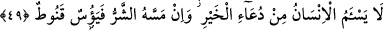

Artık lutuf yoluna girip yeryüzünde sefer ve seyahatler yaparak latîf ve habîr olan
Allah’a vâsıl olmuştur.
49. İnsan hayır istemekten usanmaz. Fakat kendisine bir kötülük dokunursa
hemen ümidsizliğe düşer, üzülüverir.
“İnsan” mal ve “hayır istemekten” nimetin çoğalmasından; hayat şart ve
imkânlarının genişlemesinden “usanmaz” usanıp yorulmaz, dâimâ malının artmasını
diler. “Ama kendisine bir şer,” fakirlik, darlık, zorluk “dokundu mu hemen üzülür”,
Allah’ın fazl ve rahmetinden “ümidsiz olur”.
İnsan mal ve hayrın kendisine gelmesi konusunda nihâî bir dereceye ulaşamaz. Hep
daha fazlasını isteyip bu talepten de hiç yorulmaz. İnsan hep mal isteği üzerine
yaratılmış olup bu konuda kendisine bir yorgunluk ve bıkkınlık ârız olmaz. İşte ulaşan
bu hasletle, yaratılmışların en hayırlısı mertebesine ulaşmış; düşen, bu hasletle
yaratılmışların en kötüsü durumuna düşmüştür. Çünkü insan teklif emânetini yüklenmek
üzere yaratılmıştır. Bu emâneti insandan başkası yüklenmekten imtinâ etmişti. İşte bu
emânet vasıtasız olarak feyz-i ilâhîyi almaktır. Bu feyzin sonu yoktur. İnsan bu sonsuz
feyzi yüklenmek için sonsuz bir talep ve arzuya muhtaçtır.
İşte bazıları bu sonsuz isteği, dünyayı, onun zînet, şehevât ve fânî lezzetini istemekte
kullanmış, bu istekte hiç usanmamış ve yaratıkların en şerlisi olmuştur.
Hâfız şöyle demiştir:
Ey bilge gönül, daha ne zamana kadar dünya derdin sürecek?
Bir güzelin çirkin birisine âşık olması, yazık doğrusu!
Ama ona bir zorluk ve darlık dokunsa hemen üzülür ve ümidsiz olur. Allah’ın fazl u
kereminden ve rahmetinden ümid keser.
Eğer ona darlık, yoksulluk ve hastalık gibi kötülükler ulaşırsa, yeniden râhata
kavuşacağına inanmaz ve rahmetten ümidini keser.
Kanût olmak, aşırı ümidsiz olmak, tamamen ümid kesmektir ki bunun tesiri kişide
hemen görülür. Artık kişi tam bir irâdesizlik ve ümidsizlik içinde bocalayıp kuvve-yi
mâneviyyesi kırılır. Ümidsizlik mânâsında olan ye’s ile kanût’un farkı budur.
et-Te’vîlâtü’n-Necmiyye’de şöyle denmiştir: İnsana nefsinin alışkanlıklarından hevâ
ve hevesinden kesilmek gibi bir şer dokununca hemen üzülüp ümidsiz olur. Artık belâ
ve sıkıntıların gideceğini ümid etmez. Çünkü bu insan, Rabbini bilmediği ve belâları
def etmesi için Allah’a dönüş husûsunda kalbine akacak feyz-i ilâhî yolları kapalı
olduğu için üzülür ve ümidsiz olur.